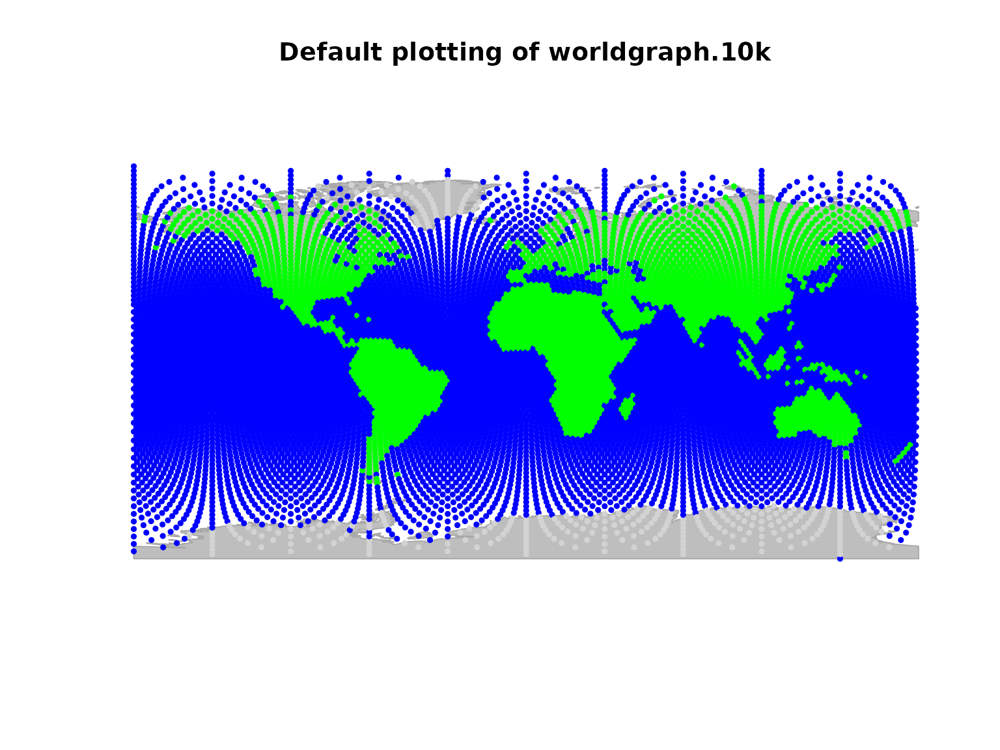
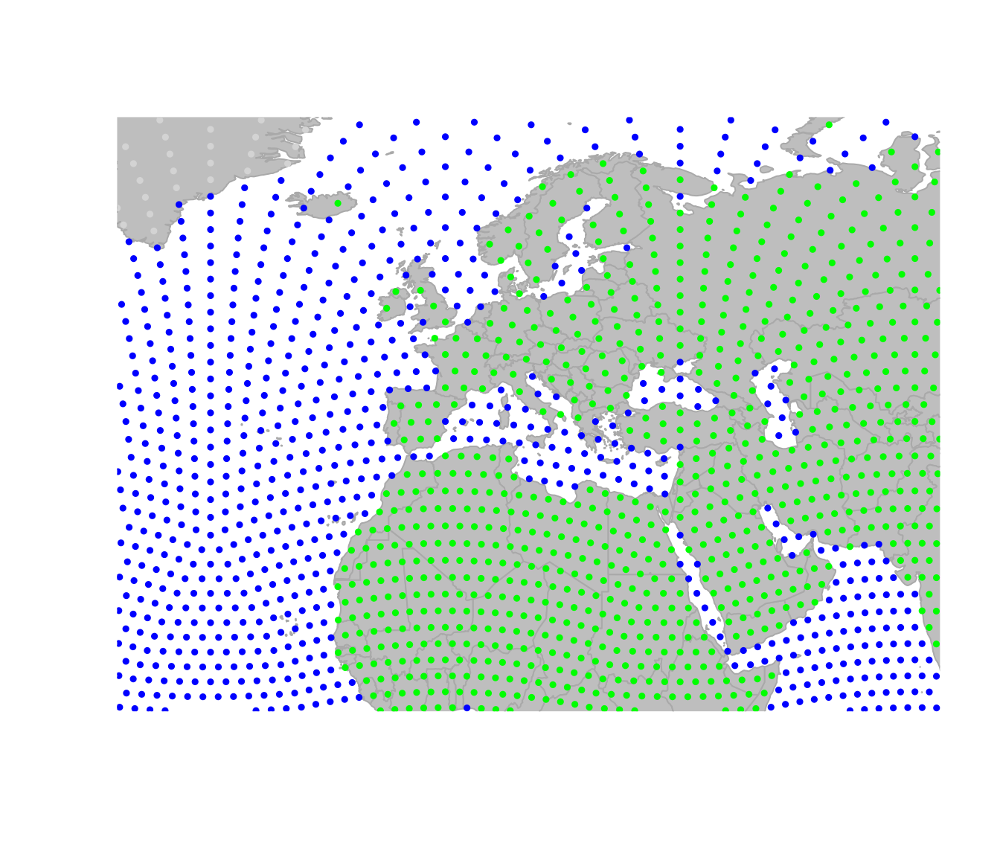
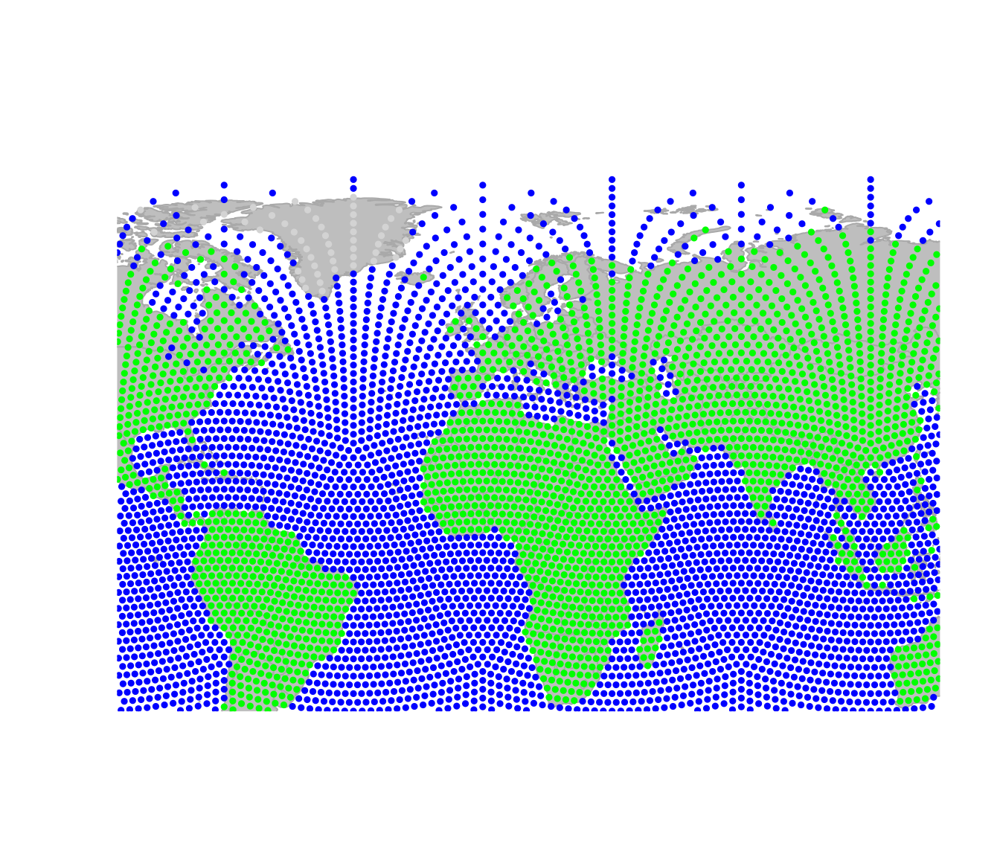
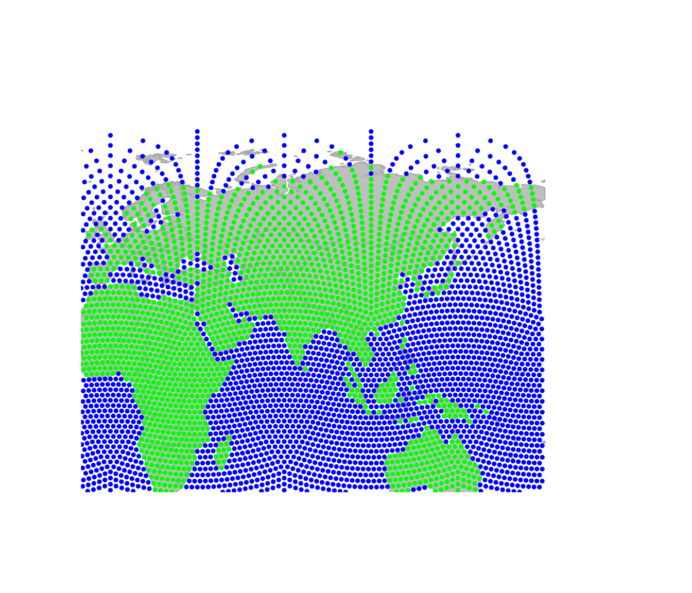
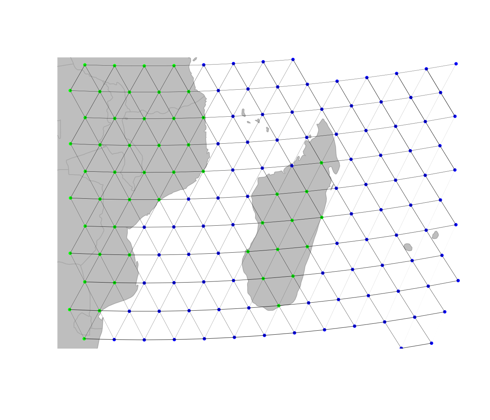
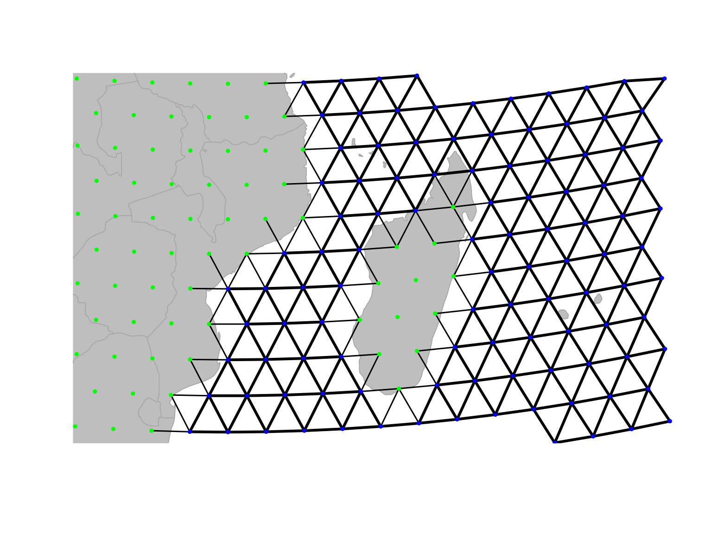
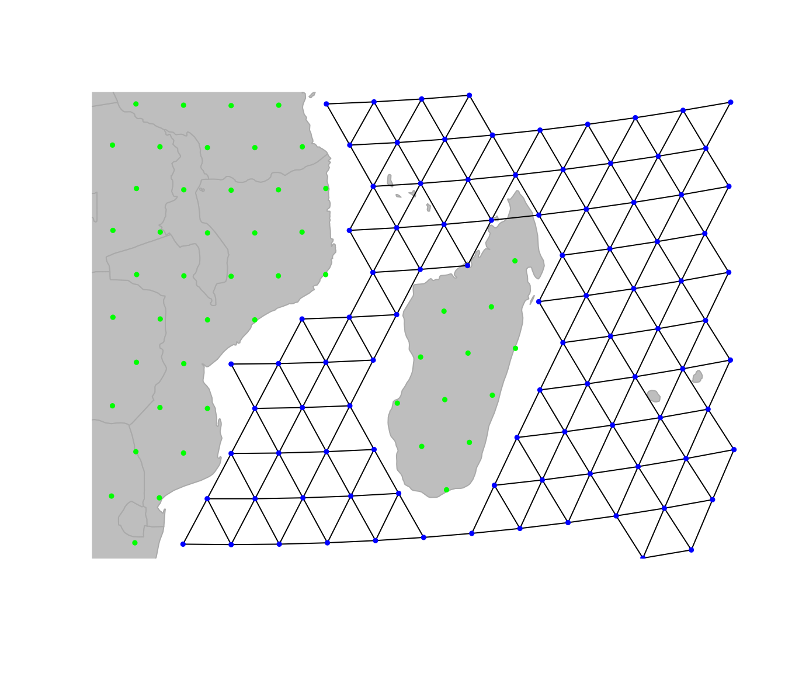
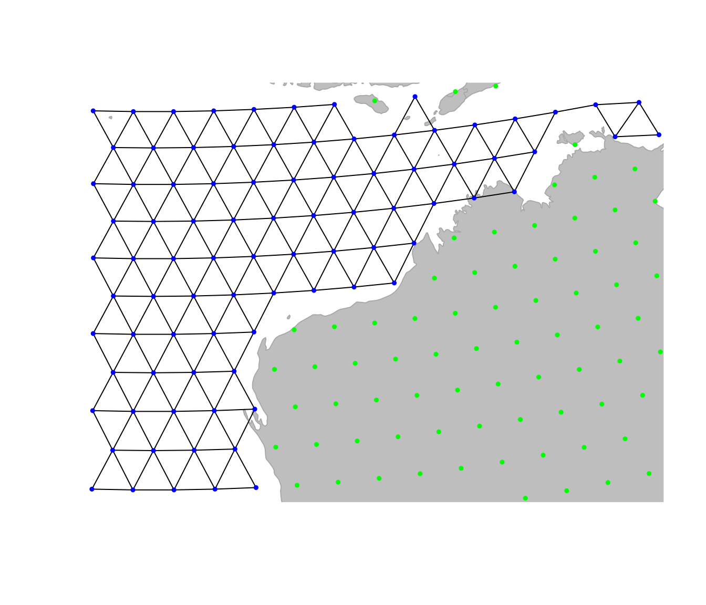
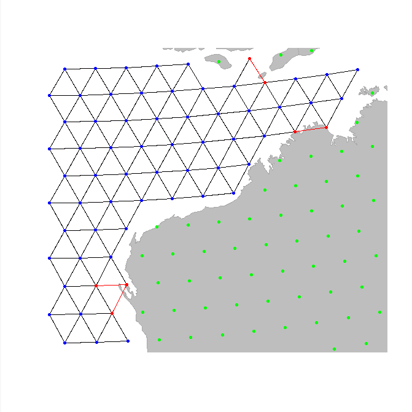
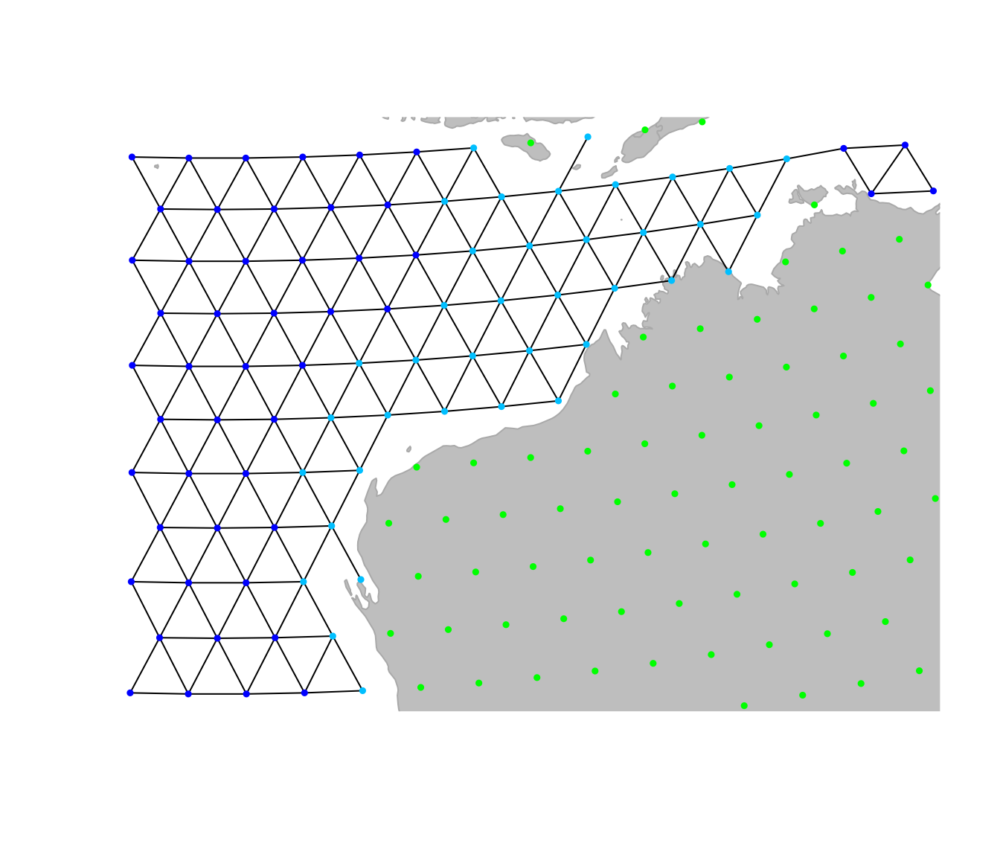

Edit graphs in geoGraph
Thibaut Jombart, Dominik Jud […] and Andrea Manica
2026-05-18
Source:vignettes/a2_edit_graphs.Rmd
a2_edit_graphs.RmdManually editing graphs in geoGraph
This vignette will cover the main functions for visualizing and
manually editing gGraph objects. It also touches on the way
geoGraph keeps track of the plotting area, and how to
navigate within it.
Visualizing data
An essential aspect of spatial analysis lies in visualizing the data.
In geoGraph, the spatial grids (gGraph) and
spatial data (gData) can be plotted and browsed using a
variety of functions.
Plotting gGraph objects
Displaying a gGraph object is done through
plot and points functions. The first opens a
new plotting region, while the second draws in the current plotting
region; functions have otherwise similar arguments (see
?plot.gGraph).
By default, plotting a gGraph displays the grid of nodes
overlaying a shapefile (by default, the landmasses). Edges can be
plotted at the same time (argument edges), or added
afterwards using plotEdges. If the gGraph
object possesses an adequately formed meta$colors
component, the colors of the nodes are chosen according to the node
attributes and the color scheme specified in meta$colors.
Alternatively, the color of the nodes can be specified via the
col argument in plot/points.
Here is an example using worldgraph.10k:
worldgraph.10k@meta$colors## habitat color
## 1 sea blue
## 2 land green
## 3 mountain brown
## 4 landbridge light green
## 5 oceanic crossing light blue
## 6 deselected land lightgray
head(getNodesAttr(worldgraph.10k))## habitat
## 1 sea
## 2 sea
## 3 sea
## 4 sea
## 5 sea
## 6 sea
table(getNodesAttr(worldgraph.10k))## habitat
## deselected land land sea
## 290 2632 7320
plot(worldgraph.10k, reset = TRUE)## Spherical geometry (s2) switched off
title("Default plotting of worldgraph.10k")
It may be worth noting that plotting gGraph objects
involves plotting a fairly large number of points and edges. On some
graphical devices, the resulting plotting can be slow. For instance, one
may want to disable cairo under linux: this graphical
device yields better graphics than Xlib, but at the expense
of increased computational time. To switch to Xlib,
type:
X11.options(type = "Xlib")and to revert to cairo, type:
X11.options(type = "cairo")Zooming in and out, sliding, etc.
In practice, it is often useful to be able to peer at specific
regions, and more generally to navigate inside the graphical
representation of the data. For this, we can use the interactive
functions geo.zoomin, geo.zoomout,
geo.slide, geo.back,
geo.bookmark, and geo.goto. The zoom and slide
functions require to left-click on the graphics to zoom in, zoom out, or
slide to adjacent areas; in all cases, a right click ends the function.
Also note that geo.zoomin can accept an argument specifying
a rectangular region, which will be adapted by the function to fit best
a square area with similar position and center, and zoom to this area
(see ?geo.zoomin). geo.bookmark and
geo.goto respectively set and go to a bookmark,
i.e. a tagged area. This is most useful when one has to switch
between distant areas repeatedly.
Here are some examples based on the previous plotting of
worldgraph.10k: Zooming in:

Zooming out:

Sliding to the east:

One important thing which makes plotting gGraph objects
different from most other plotting in R is that geoGraph
keeps the changes made to the plotting area in memory. This allows to
undo one or several moves using geo.back. Moreover, even if
the graphical device is killed, plotting again a gGraph
will use the old parameters by default. To disable this behavior, set
the argument reset=TRUE when calling upon
plot. Technically, this ‘plotting memory’ is implemented by
storing plotting information in an environment defined as the hidden
environment geoGraph:::.geoGraphEnv:
ls(env = geoGraph:::.geoGraphEnv)## [1] "bookmarks" "last.plot" "last.plot.param" "last.points"
## [5] "psize" "sticky.points" "usr" "zoom.log"You can inspect individual variables within this environment:
get("last.plot.param", envir = geoGraph:::.geoGraphEnv)## $psize
## [1] 0.5
##
## $pch
## [1] 19However, it is recommended not to modify these objects directly,
unless you really know what you are doing. In any case, plotting a
gGraph object with argument reset=TRUE will
remove previous plotting history and undo possible wrong
manipulations.
Plotting gData objects
gData objects are by default plotted overlaying the
corresponding gGraph. To show this, we use the
cities example from the vignette ‘get started’:
Bordeaux <- c(-1, 45)
Berlin <- c(13, 52)
Baku <- c(44, 40)
Timbuktu <- c(-3, 16)
cities.dat <- rbind.data.frame(Bordeaux, Berlin, Baku, Timbuktu)
colnames(cities.dat) <- c("lon", "lat")
row.names(cities.dat) <- c("Bordeaux", "Berlin", "Baku", "Timbuktu")
cities.dat$pop <- c(250000, 3500000, 2000000, 50000)
cities.dat## lon lat pop
## Bordeaux -1 45 250000
## Berlin 13 52 3500000
## Baku 44 40 2000000
## Timbuktu -3 16 50000
cities <- new("gData", coords = cities.dat[, 1:2], data = cities.dat[, 3, drop = FALSE], gGraph.name = "worldgraph.10k")
plot(cities, type = "both", reset = TRUE)
text(getCoords(cities), rownames(getData(cities)))
Note the argument reset=TRUE, which tells the plotting
function to adapt the plotting area to the geographic extent of the
dataset.
To plot additional information, it can be useful to extract the
spatial coordinates from the data. This is achieved by
getCoords. This method takes an extra argument
original, which is TRUE if original spatial coordinates are
sought, or FALSE for coordinates of the nodes on the grid. We can use
this to represent, for instance, the population sizes for the different
cities:
transp <- function(col, alpha = .5) {
res <- apply(
col2rgb(col), 2,
function(c) rgb(c[1] / 255, c[2] / 255, c[3] / 255, alpha)
)
return(res)
}
plot(cities, reset = TRUE)
par(xpd = TRUE)
text(getCoords(cities) + -.5, rownames(getData(cities)))
symbols(getCoords(cities)[, 1], getCoords(cities)[, 2],
circ = sqrt(unlist(getData(cities))), inch = .2,
bg = transp("red"), add = TRUE
)
Editing gGraphs
Editing graphs is an essential task in geoGraph. While
available gGraph objects provide a basis to work with (see
?worldgraph.10k), one may want to adapt a graph to a
specific case. For instance, connectivity should be defined according to
biological knowledge of the organism under study. gGraph
can be modified in different ways: by changing the connectivity, the
costs of edges, or the attribute values. We already saw in the vignette
‘get started’ how to manually add a connection between two nodes, and we
will see here how to change the global connectivity and edge costs.
Changing the global connectivity of a gGraph
There are two main ways of changing the connectivity of a
gGraph, which match two different objectives. The first
approach is to perform global and systematic changes of the connectivity
of the graph. Typically, one will want to remove all connections over a
given type of landscape, which is impossible to cross by the organism
under study. Let’s assume we are interested in saltwater fishes. To
model fish dispersal, we have to define a graph which connects only
nodes overlaying the sea. We load the gGraph object
rawgraph.10k, and zoom in to a smaller area (Madagascar) to
illustrate changes in connectivity:
geo.zoomin(c(35, 54, -26, -10))
plotEdges(rawgraph.10k)
We shall set a bookmark for this area, in case we would want to get back to this place later on:
geo.bookmark("madagascar")##
## Bookmark ' madagascar 'saved.What we now want to do is remove all but sea-sea connections. To do so, the easiest approach is to i) define costs for the edges based on habitat, with land being given large costs and ii) remove all edges with large costs.
Costs of a given node attribute (here, habitat) are
indicated in the meta$costs slot:
rawgraph.10k@meta$costs## habitat cost
## 1 sea 100
## 2 land 1
## 3 mountain 10
## 4 landbridge 5
## 5 oceanic crossing 20
## 6 deselected land 100
newGraph <- rawgraph.10k
newGraph@meta$costs[newGraph@meta$costs[,1] == "sea", 2] <- 1
newGraph@meta$costs[newGraph@meta$costs[,1] != "sea", 2] <- 100
newGraph@meta$costs## habitat cost
## 1 sea 1
## 2 land 100
## 3 mountain 100
## 4 landbridge 100
## 5 oceanic crossing 100
## 6 deselected land 100We have just changed the costs associated to habitat type, but this
change is not yet effective on edges between nodes. We use
setCosts to set the cost of an edge to the average of the
costs of its nodes:

On this new graph, we represent the edges with a width inversely
proportional to the associated cost; that is, bold lines for easy
traveling and light edges/dotted lines for more costly movement. This is
not enough yet, since traveling on land is still possible. However, we
can tell geoGraph to remove all edges associated to too strong
a cost, as defined by a given threshold (using
dropDeadEdges). Here, only sea-sea connections shall be
retained, that is, edges with cost 1.
newGraph <- dropDeadEdges(newGraph, thres = 1.1)
plot(newGraph, edge = TRUE)
Here we are: newGraph only contains connections in the
sea. Note that, although we restrained the plotting area to Madagascar,
this change is effective everywhere. For instance, traveling to the
north-west Australian coasts:
geo.zoomin(c(110, 130, -27, -12))
geo.bookmark("australia")##
## Bookmark ' australia 'saved.Changing local properties of a gGraph
A second approach to changing a gGraph is to refine the
graph by hand, adding or removing locally some connections, or altering
the attributes of some nodes. This can be necessary to connect
components such as islands to the main landmasses, or to correct
erroneous data. As seen in the vignette ‘get started’, adding and
removing edges from the grid of a gGraph can be achieved by
geo.add.edges and geo.remove.edges,
respectively. These functions are interactive, and require the user to
select individual nodes or a rectangular area in which edges are added
or removed. See ?geo.add.edges for more information on
these functions. For instance, we can remove a few odd connections in
the previous graph, near the Australian coasts (note that we have to
save the changes using <-):
geo.goto("australia")
newGraph <- geo.remove.edges(newGraph)
When adding connections within an area or in an entire graph, node
addition is based on another gGraph, i.e. only
connections existing in another gGraph serving as reference
can be added to the current gGraph. For graphs based on 10k
or 40k grids, the raw graphs provided in geoGraph should be
used, (rawgraph.10k, rawgraph.40k), since they
are fully connected.
In addition to changing grid connectivity, we may also want to modify
the attributes of specific nodes. This is again done interactively,
using the function geo.change.attr. For instance, here, we
define a new value shallowwater (plotted in light blue) for
the attribute habitat, selecting affected nodes using the
‘area’ mode first, and refining the changes using the ‘point’ mode:
plot(newGraph, edge = TRUE)
newGraph <- geo.change.attr(newGraph,
mode = "area", attr.name = "habitat",
attr.value = "shallowwater", newCol = "deepskyblue"
)
newGraph <- geo.change.attr(newGraph,
attr.name = "habitat",
attr.value = "shallowwater", newCol = "deepskyblue"
)
newGraph@meta$colors## habitat color
## 1 sea blue
## 2 land green
## 3 mountain brown
## 4 landbridge light green
## 5 oceanic crossing light blue
## 6 deselected land lightgray
## 7 shallowwater deepskyblue
plot(newGraph, edge = TRUE)
Again, note that the changes made to the graph have to be saved in an
object (using <-) to be effective.